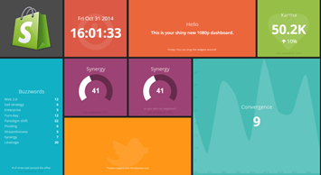

Qu'est ce que Jdash?
Présentation
Notre projet Jdash, est un projet qui a été développé dans le but de proposer à son utilisateur un outil lui permettant de regrouper différentes
sources d’informations et/ou applications dont il pourrait avoir besoin dans un seul ensemble.
L’application se présentera comme un Dashboard.

Une interface de ce type permet de regrouper aisément et agréablement les différentes sources/types d’informations que l’utilisateur consulte régulièrement.
Toutes les applications seront réalisées et exécutées en Java.
Certaines utiliserons des API propriétaires (Facebook, Twitter, …).
Jdash contiendra par défaut certaines fonctionnalités, comme un launcher d’applications présentes sur la machine hôte.
Ou le télécharger?
L'application Jdash est disponible dans l'onglet "Download" au dessus du site, tout visiteur du site ainsi que les membres inscris sur le site peuvent la télécharger à volonté.
L'application sera donc disponible en téléchargement sous ses différentes versions
Descriptif Fonctionnel
- Application lourde Java
L’application utilisera des « tuiles » dans lesquelles l’utilisateur pourra intégrer un des plugins précédemment téléchargés.
L’utilisateur pourra rajouter/supprimer/déplacer et modifier (couleur de fond, taille par défaut, …) des tuiles dans lesquelles il pourra ajouter les plug-ins désirés.
Par défaut Jdash proposera 3 plug-ins affichés (horloge, post-it, calculatrice) et deux autres déjà installés Flux RSS, calendrier. Le reste du catalogue sera disponible via l’interface web.
Quel est l'intérêt de Jdash?
L'intérêt de Jdash est que chaque utilisateur peut contribuer à son l'évolution. Si vous êtes un développeur en java et que vous avez de petites applications que vous souhaitez partager avec
la communauté, Jdash est donc l'application qu'il vous faut car chaque utilisateur peut poster des plug-ins à volonté.